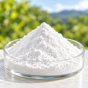
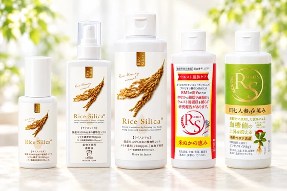
Health Products
植物由来シリカで健康的な毎日をサポート
植物由来シリカ製品を世界へ。
Plant-Based Silica Innovation from Japan to the World
※その他の国・地域での販売提携につきましても、ぜひご相談ください。
近年、中国・韓国・台湾・インド・ベトナムでは、健康・美容・ペットケア市場が力強い成長を続けており、消費者の関心は「安全性」「自然由来」「品質重視」へと大きくシフトしています。
その中でも、植物由来原料を活用した製品は高い注目を集めております。
海外市場において当社シリカ製品への関心が高まっており、消費者からの直接購入も増加しています。
この成長市場を共に開拓し、新たな価値と収益を創出できるパートナー企業様を募集しております。
Patented Technology （特許取得技術）
自然の恵みを、特許技術で新たな価値へ。
株式会社クレディーは、籾殻を原料として高純度シリカを抽出する独自の特許技術を有し、植物由来シリカの研究開発から製品企画、製造、供給までを一貫して手掛けています。さらに、その技術を活かし、健康・美容・ペット分野におけるさまざまな製品を開発・提供しております。
また、岐阜県美濃市の「名水百選」に選ばれた良質な超軟水を活用したウォーター事業を、自社工場にて展開しております。
この良質な天然水に、当社独自の研究開発により生み出した「選択的吸着機能」を備えた植物由来シリカを配合することで、体内の不要な物質の排出をサポートする機能性飲料を開発いたしました。
本技術は現在特許出願中で、その有用性をさらに高めるため、継続的な研究・開発を進めております。


植物由来シリカで健康的な毎日をサポート
植物の恵みで美しさを引き出すボタニカル美容製品
名水百選の超軟水から生まれた天然水・シリカウォーター
ペットの健やかな毎日を支えるシリカ配合製品
健康と美容の土台となるミネラル
シリカ全身の組織を支える「接着役」
骨・血管・肌・髪・爪などの
成分同士の結び付きを支える
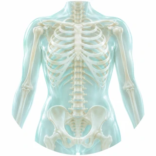
骨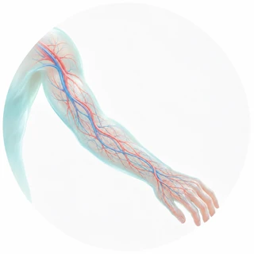
血管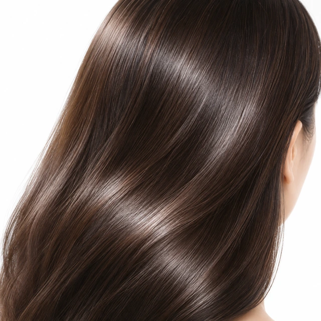
髪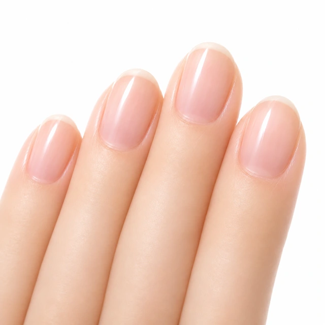
爪どれだけ良い栄養を摂っても、シリカがなければ活かしきれません。
シリカは、骨・血管・肌・髪・爪などの構成を支える「接着役」。健康と美容の土台となるミネラルです。
シリカ（ケイ素）は、私たちの体にもともと存在している重要なミネラルです。
骨・血管・皮膚・髪・爪・免疫など全身のさまざまな組織に存在し、健康と美容の土台を支える働きをしています。
なかでもシリカの大きな役割は、体を構成する成分同士を結び付けることです。
いわば、体内で栄養素や組織を支える「接着役」のような存在です。
例えば骨は、カルシウムだけを摂取すれば丈夫になるわけではありません。コラーゲンという土台にカルシウムがしっかり結び付くことで、強くしなやかな骨が形成されます。
また血管は、コラーゲンやエラスチンによって支えられることで、ゴムホースのようなしなやかさと弾力性を保っています。
シリカは、こうした体を構成する大切な成分同士の結び付きを支え、それぞれが本来の働きを発揮できるようサポートしています。
そのため、カルシウムやコラーゲンなどの栄養素を十分に摂取していても、シリカが不足していると、それらを効率よく活かすことができません。
若い人の体内シリカ量
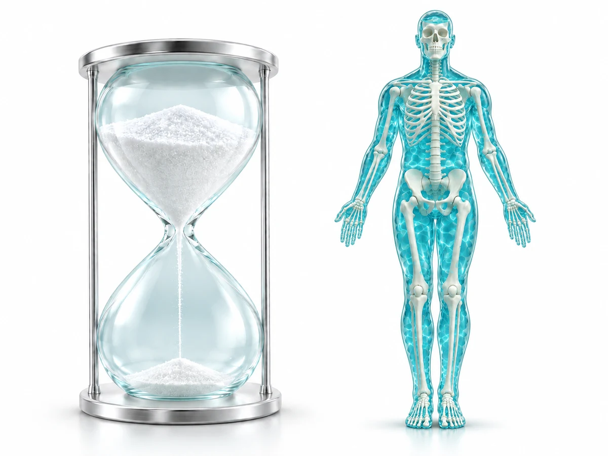
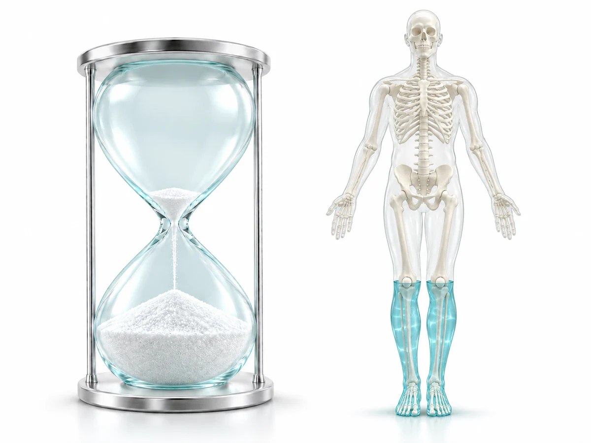
年齢とともに変化する体内のシリカ量
年齢（歳）
体内では作れない。だから、補うしかない。
シリカは、健康と美容を支える重要なミネラルですが、年齢とともに体内量が減少し、40歳頃には若い頃の半分以下になるともいわれています。
しかも、シリカは体内で作り出すことができません。
また、現代では食生活の変化や農薬や化学肥料の多用により土壌環境が変化し、食品から十分なシリカを摂取することが難しくなっています。
そのため、サプリメントやシリカ含有飲料などを活用し、効率的にシリカを補う必要があります。
鉱物由来シリカ
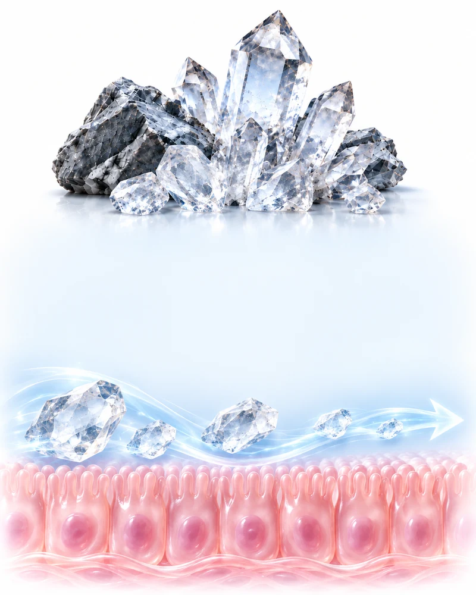
（μg/mg Tissues）
服用期間 2か月
植物由来シリカ
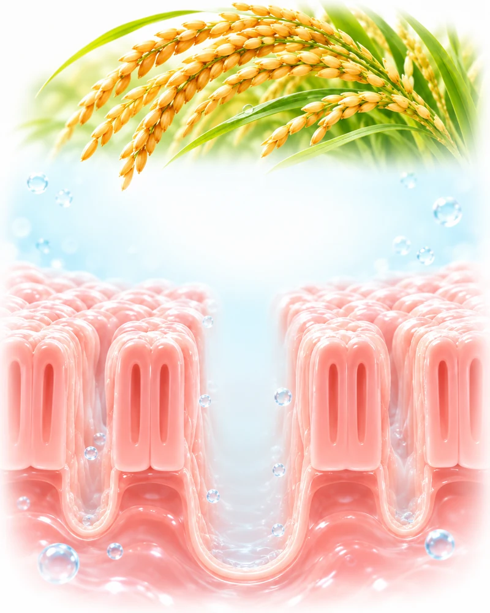
| 試験名 | 鉱物由来及び植物由来のシリカによる体内吸収比較試験 |
|---|---|
| 実施 | 東京予防医療クリニック （依頼者：株式会社クレディー） |
| 対象 | 健常成人 20名（各群10名） |
| 服用期間 | 2か月 |
| 測定方法 | Oligo Scan（吸光光度法による体内ミネラル検査） |
| 結果 | 体内ケイ素濃度の増加量 鉱物由来 +0.99 ／ 植物由来 +1.81（μg/mg Tissues） |
本データは、医療機関と共同で実施した
臨床試験によって得られた臨床評価結果です。
高吸収・高安全性。体になじむ植物由来シリカ。
当社のシリカは、天然植物由来の高品質シリカを採用しており、人の体との親和性に優れていることが大きな特長です。
一般的な鉱物由来シリカと比較して、約1.8倍の吸収率を臨床試験で確認しており、効率的に体内へ取り込まれることが証明されています。また、植物由来であるため、鉱物由来シリカで懸念される体内での再結晶化リスクが無く、安全性にも優れています。
さらに、摂取後に体内で利用されなかった余剰分は、尿などを通じて自然に体外へ排出されることが体内動態試験により確認されています。
つまり当社の植物由来シリカは、
を兼ね備えた、「吸収されやすく、安全で、効率よく活用できるシリカ」です。
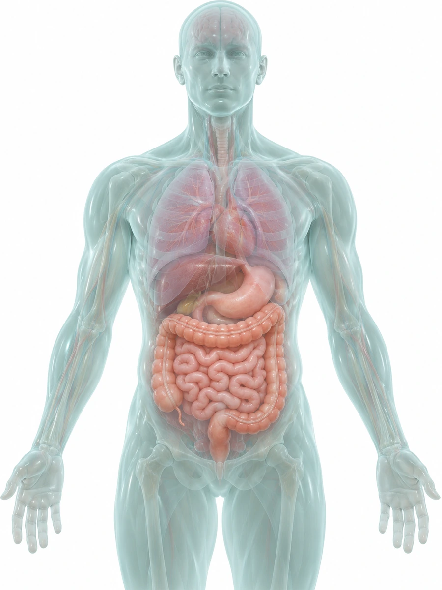
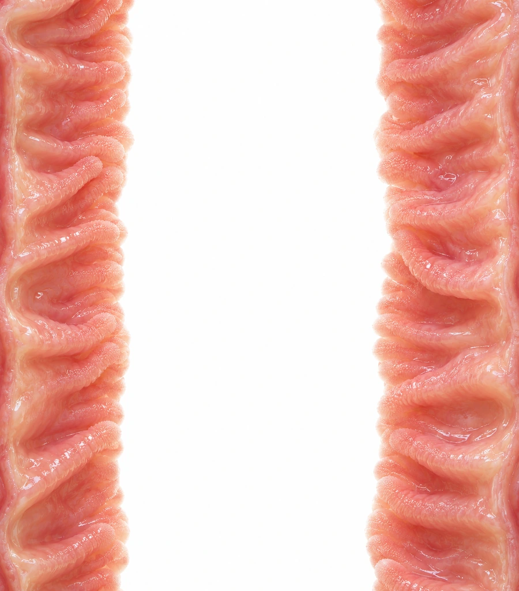
腸管内腸壁不要物質（プラス電荷）シリカ（マイナス電荷）必要成分プラスに帯電した対象の不要物質が、腸管内に存在。
シリカコロイドが、対象の不要物質を表面に吸着。
不要物質が結び付いたまま、腸の中を進み排出。
現代人のための ボディクリーンテクノロジー（特許出願済）
植物由来シリカには、本来備わっている微弱なイオン吸着特性があります。
当社は長年にわたる研究開発の成果として、この特性を独自技術により大幅に高めることに成功しました。
その結果、農薬や重金属類、食品添加物由来成分、さらには体内に蓄積しやすい不要な老廃物など、プラスの電荷を持つ物質を効率的に引き寄せて吸着する独自の機能を実現しています。
さらに、吸着された不要物質は体内に再吸収されることなく、体外へ排出されることが臨床試験において確認されています。
現代社会では、環境汚染物質や食品由来の不要成分など、私たちを取り巻くさまざまなリスクへの関心が高まっています。当社の選択的吸着技術は、こうした社会的課題への新たなアプローチとして大きな可能性と競争優位性を秘めています。
現在、この独自技術を核として、健康・美容・ペットなどの分野で製品開発を進めており、植物由来シリカならではの新たな価値創造と市場の可能性拡大に取り組んでいます。
当社では、パートナー企業様の事業形態や販売体制に応じて、以下の2種類の契約形態をご用意しております。
同一の国または地域において、複数の販売パートナー様に販売いただく契約形態です。
幅広い販売チャネルを活用し、市場拡大を目指していただけます。
特定の国または地域において、貴社に独占販売権を付与する契約形態です。競合他社との販売競争を避けながら、優位性を持って市場開拓を進めていただけます。
契約条件につきましては、双方にとって最適な形となるよう、可能な限り柔軟に対応いたします。
どうぞお気軽にご相談ください。
以下の内容をご記載のうえ、当社お問い合わせフォームよりご連絡ください。
担当より折り返しご連絡し、詳細の打合せを進めさせていただきます。
当社には対象国の言語に精通したスタッフが在籍しておりません。
そのため、商談・連絡・資料共有等のやり取りは、AI翻訳を活用したメールおよびチャット等を中心に進めさせていただきます。
あらかじめご了承くださいますようお願い申し上げます。
当社は、植物由来シリカの価値を中国・韓国・台湾・インド・ベトナム市場に広げるため、信頼できるパートナー企業との協業を重視しております。
長期的な成長を共に目指していただける企業様からのご応募を心よりお待ちしております。
中国・韓国・台湾・インド・ベトナム市場での展開をお考えの企業様へ、製品資料と技術情報をお送りいたします。